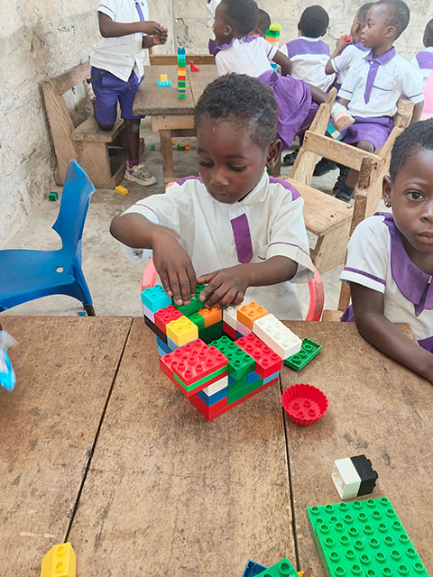
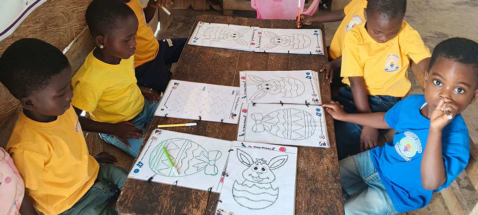
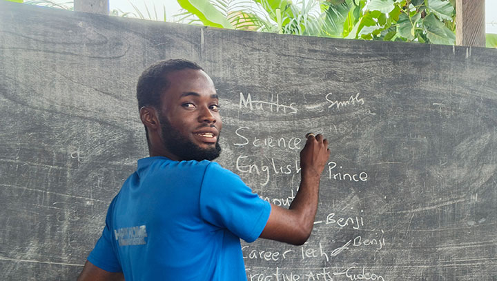

How Children Learn & Remember
A child's memory system operates in three simple steps:
- 1. The Spotlight (Sensory Attention): If the class is noisy or the blackboard is cluttered, the child's spotlight lands on the wrong thing.
- 2. The Desk (Working Memory): This desk is tiny! It can only hold 2 to 4 items at once. If you give 5 instructions, the desk collapses and the child gets confused.
- 3. The Storage Room (Long-Term Memory): Once a child practices an idea repeatedly with meaning, it gets stored here permanently.
Attention Span Calculator
A child can only listen quietly for 2 to 3 minutes per year of age before their brain needs an action.
After this time, stop talking and give them a 2-minute quick task (write 1 word, turn and talk to a partner, or solve 1 problem).
4 Golden Rules for Behavior Management
Never say: "Don't make noise!" Say: "Voices at zero, eyes on the board." Children must visualize the action to execute it.
Shouting a pupil's name across the room triggers fear and embarrassment. Walk over quietly, give the instruction in a low voice, and move on.
Avoid: "You are so intelligent!" Say: "I like how you kept working until you got question 4 right." This builds perseverance.
Never teach while pupils are opening books or switching periods. Use a 3-clap rhythm or say: "Pencils down in 3, 2, 1." Wait for complete quiet.
Teaching by Age Group (Ages 4–15)
Click any age group below to view how their brain works and what you must do in class:

How they think: If they cannot see it, hold it, or taste it, it does not make sense to them. They cannot grasp numbers as abstract symbols alone.
Rule for Teachers: Use bottle caps, pebbles, seeds, and real fruits. Teach "3 mangoes plus 2 mangoes" by physically putting them together before writing 3 + 2 = 5 on the board.

How they think: Logic is beginning to form. They love clear rules and fairness. They get upset if one pupil gets away with something another was punished for.
Rule for Teachers: Keep board layouts neat and uniform every day. Give 1 instruction at a time. Never announce a reward or penalty you do not strictly enforce.
How they think: They can solve multi-step problems and work in groups. They begin to care deeply about what their classmates think of them.
Rule for Teachers: Never laugh at a wrong answer or allow others to tease them. Use "Think-Pair-Share" (think alone for 1 minute, discuss with seatmate for 1 minute, then share with class).
How they think: Capable of deep abstract thought, debates, and personal opinions. However, their brain is reorganizing; emotional outbursts and sensitivity to shame are high.
Rule for Teachers: Treat them with genuine respect. Give them responsibilities (e.g., lab captains, group leaders). Avoid power struggles in front of the whole class.
Cognitive Load Theory (The "Water Cup" Model)
A child's working memory is like a plastic cup. It can only hold so much water before it overflows. When it overflows, learning stops completely.
Toggle Classroom Habits:
Theory-to-Practice Checklist
Review this table before preparing your daily lesson notes and board work:

| Classroom Area | Mistake to Avoid | Actionable Best Practice |
|---|---|---|
| The Blackboard | Writing everywhere at random, squeezing notes in corners, adding fancy decorative borders. | Zone the board: Date & subject top-left, key terms top-right, clean step-by-step notes in the center. |
| Giving Instructions | "Take out your exercise books, turn to exercise 4 on page 20, copy question 1, and use a ruler." | Give 1 step at a time: "Open your book to page 20." Wait until all pencils are down. Then give step 2. |
| Reading & Talking | Talking and explaining while pupils are trying to read a passage in their books. | Read it out loud together first, OR let them read silently. Never talk over their reading. |
| Checking Understanding | Asking: "Do you all understand?" (Children always answer "Yes Sir!" even when confused). | Ask 2 pupils: "Kofi, what is the first step we do next?" or have everyone hold up thumbs up/thumbs down. |
| Teaching Math/Science | Writing symbols and formulas immediately without demonstrating with real objects. | Use real things first (paper strips, coins, stones), draw diagrams second, and write formulas last. |
Classroom Scenario Challenge Lab
Put your knowledge to the test. Read the 5 real school situations below and choose the best pedagogical action:
Scenario 1: The Noisy Class Transition
It is 10:30 AM. Break time has just ended. Class 4 pupils are noisy, drinking water, and running around the classroom. What should the teacher do?
Scenario 2: Teaching Equivalent Fractions to Class 2 (Age 7)
You want to teach that 1/2 is the same size as 2/4. What is the best way according to child psychology?
Scenario 3: The Board Design Trap
A teacher is preparing the chalkboard for an English grammar lesson. How should the board look?
Scenario 4: Handling an Embarrassed JHS 2 Student (Age 14)
A 14-year-old boy in JHS 2 gives a completely wrong answer during an ICT lesson. A few classmates snicker. What should you do?
Scenario 5: Multi-tasking Overload
A teacher gives a reading task by saying: "Open your science reader to page 45, look at diagram 3, write down two observations, and make sure your handwriting is cursive." What is wrong with this?